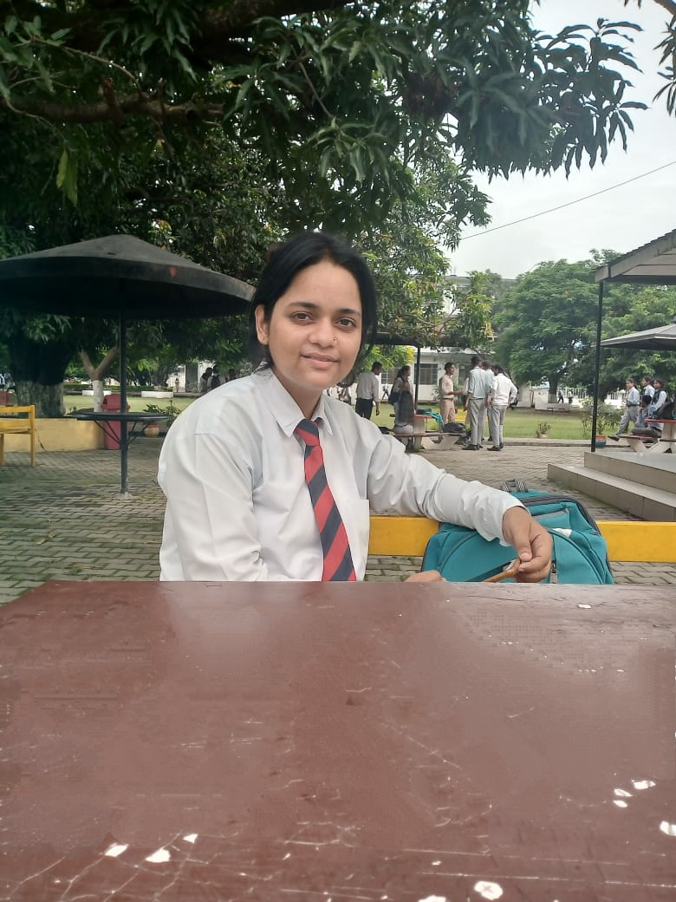

A quiz program based on java programming language, gives the result of our answers. It uses java.awt and javax.swing packages.
A Kumaoun based website which define the culture, tradition, temples, faires, places and nature of kumaoun. In this website, the webpage created by HTML, CSS and JavaScript. wana check click here
An ATM(Automated Teller Machine) build for transaction money like withdraw, deposit, check the payment and user login/logout interface. It uses java.awt, java.swing and java.sql packages.
Features of this project: login/logout, signup, book and cancel reservation of train and see the train status with train number.